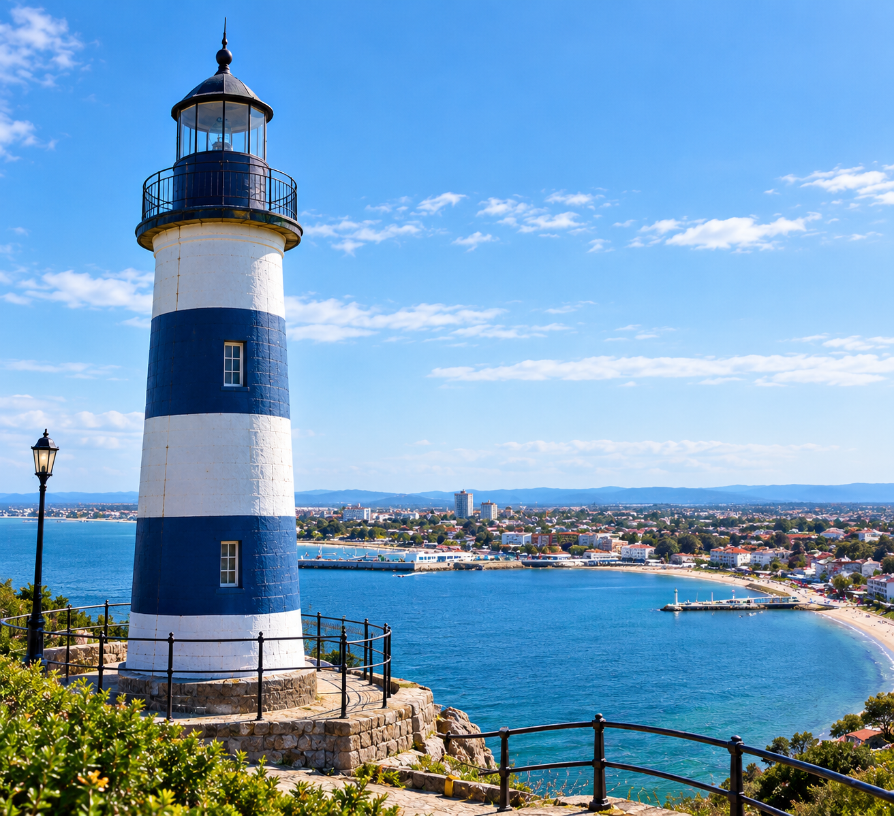
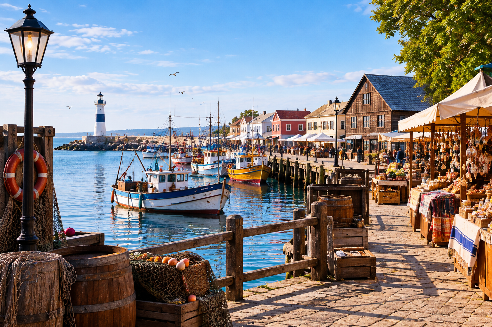
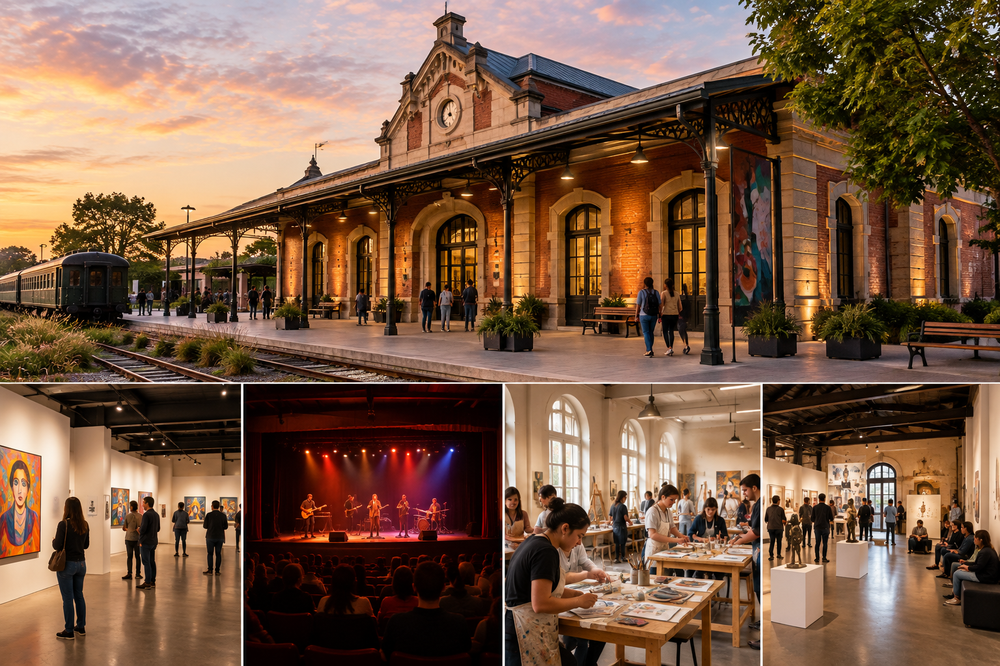
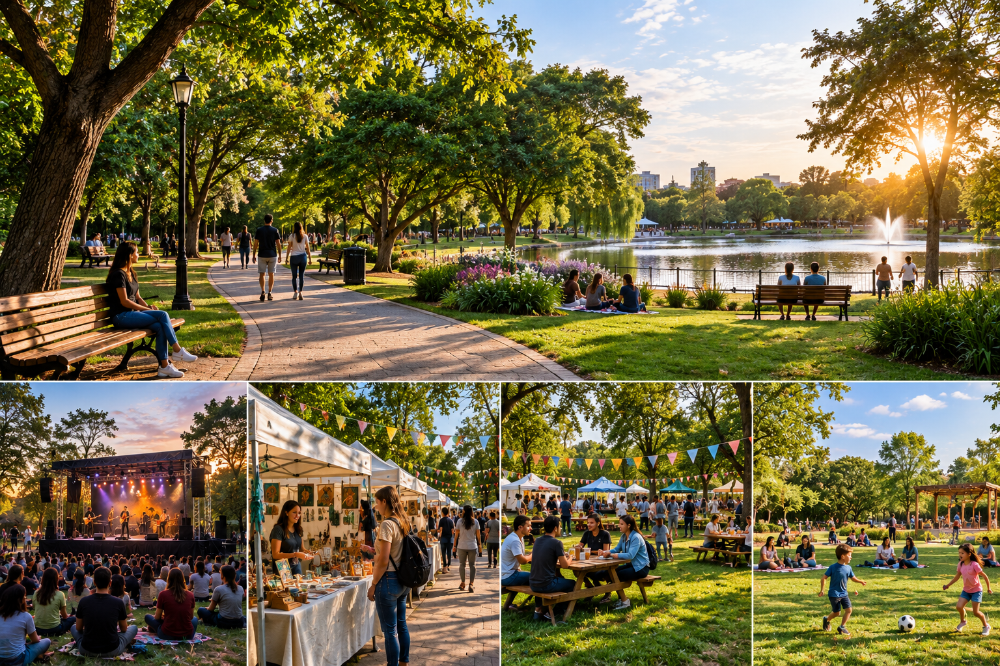

Faro de Aurora
Construido en 1912, el faro fue utilizado durante décadas para orientar a las embarcaciones que se acercaban al puerto. Actualmente ya no cumple una función de navegación y funciona como uno de los principales miradores turísticos de la ciudad. Desde su parte superior se puede observar gran parte de la costa y la bahía que dio origen a Puerto Aurora.

Puerto histórico
Es el corazón histórico de Puerto Aurora. Además de continuar siendo utilizado por pescadores locales, cuenta con un mercado donde se venden productos regionales y artesanías. Es uno de los lugares más visitados debido a que permite conocer cómo era la ciudad durante sus primeros años.

Centro cultural La Estacion
El antiguo edificio ferroviario fue restaurado y convertido en un centro dedicado al arte y la cultura. Actualmente alberga:
- Exposiciones
- Obras de teatro
- Conciertos
- Talleres artísticos
- Actividades culturales
Su fachada conserva parte de la arquitectura original de la estación, convirtiéndolo también en un atractivo histórico

Parque del Sol
Es uno de los principales espacios recreativos de la ciudad. Cuenta con senderos, árboles, sectores de descanso y espacios destinados a actividades culturales. Durante el año se realizan allí ferias, festivales y encuentros comunitarios.
